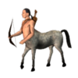

fheroes2 : War of Thrones
Open data project for fheroes2

Intro
fheroes2 is a free (under GPL license) implementation of the engine of the game "Heroes of Migth and Magic 2".
You can use fheroes2 if you have the game 's data :
The game artwork, whose are aggregated in a AGG file : HEROES2.AGG, or HEROES2X.AGG (extension)
Some scenario map, you can freely find on the internet
The fheroes2-WoT project aim to replace the artwork data with open data. For the moment, only few open data are available.
They can be found on the project 's github page. Just download the project's files in yours fheroes2 installation directory and edit the "fheroes2.cfg" file to change/add the option "alt resource = on". See this for more explanations.
The artwork data
In this section you can find some technical informations on homm2 data, that may be usefull if you want to contribute to this project or if you want to replace some data in the game for your personal use.